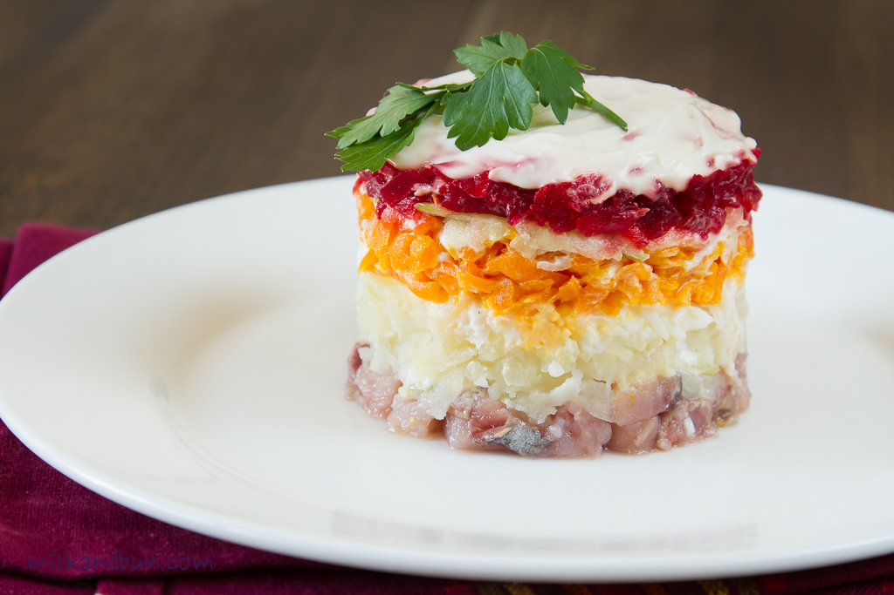

Description
This is a beloved dish around New Year's celebration, or really, as with many things Russian - any time you feel like eating a combination of herring, mayo and beets. There is more to it, obviously, so let's find out what makes this odd sounding combinaiton delicios.

Ingredients
- 200-300g herring fillet, lightly salted
- 1 brown onion, finely chopped
- 2 large potatoes, skin on and boiled
- 2 large beetroot, skin on, boiled or roasted
- 1 medium carrot, skin on and boiled
- 1-2 hard-boiled eggs, chopped or grated, optional
- 1 juicy and sour apple (granny smith is great), coarsely grated, optional
Dressing
- 100-150ml (15-20% fat) sour cream, or as much as you like
- 2-3 Tbsp mayonnaise, optional
- 1 tsp dijon mustard, optional
- salt and pepper to taste
Directions
- For the dressing, mix all ingredients and season to taste, or use only sour cream. You can spread the dressing with a tablespoon, or use a piping bag.
- Cover chopped onion with hot water and soak for 5-10 minutes, it helps to remove the bitterness. Then drain water.
- Drain any liquid from herring. Cut herring fillet into small cubes. Make the first layer – arrange herring on a serving plate. Spread onion on herring.
- Peel vegetables and coarsely grate or finely chop.
- Arrange a layer of potatoes. Cover with dressing. Also you can make potatoes the very first layer, if desired.
- Spread eggs, if using, and lightly cover with dressing. Also you can top finished salad with eggs.
- Arrange a layer of carrot. Cover with dressing.
- Arrange a layer of apple. Lightly cover with dressing.
- Finish with a layer of beet. You can only top with grated beetroot, or complitely cover the salad. Spread evenly some dressing.
- Garnish with chopped dill or chives, if desired.